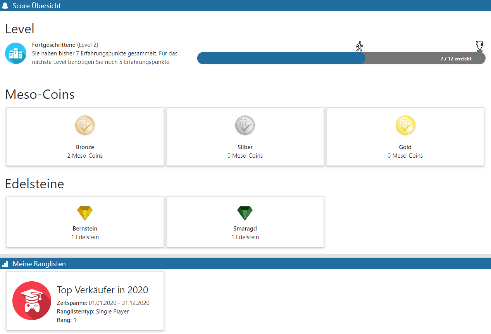

Sie bietet alle (dem zuvor selektierten Menüpunkt entsprechenden) Informationen auf einem Blick. Viele der abgebildeten Widgets und Kacheln führen den Benutzer eine Ebene tiefer. Dort können weitere detaillierte Angaben zu den Punkten abgerufen werden.

Enthaltene Angaben können sein:
ü Aktueller Level und Status des Fortschritts zur nächsten Stufe
ü Art und Menge der erwirtschafteten Meso-Coins
ü Art und Menge der erwirtschafteten Edelsteine
ü Angaben über aktive bezugnehmende Ranglisten
ü Angaben über aktive bezugnehmende Geschäftsziele
ü Angaben über bezugnehmende Kategorien (und darin enthaltene einmalige Erfolge)
ü Angaben zu bezugnehmenden wiederholbaren Erfolgen